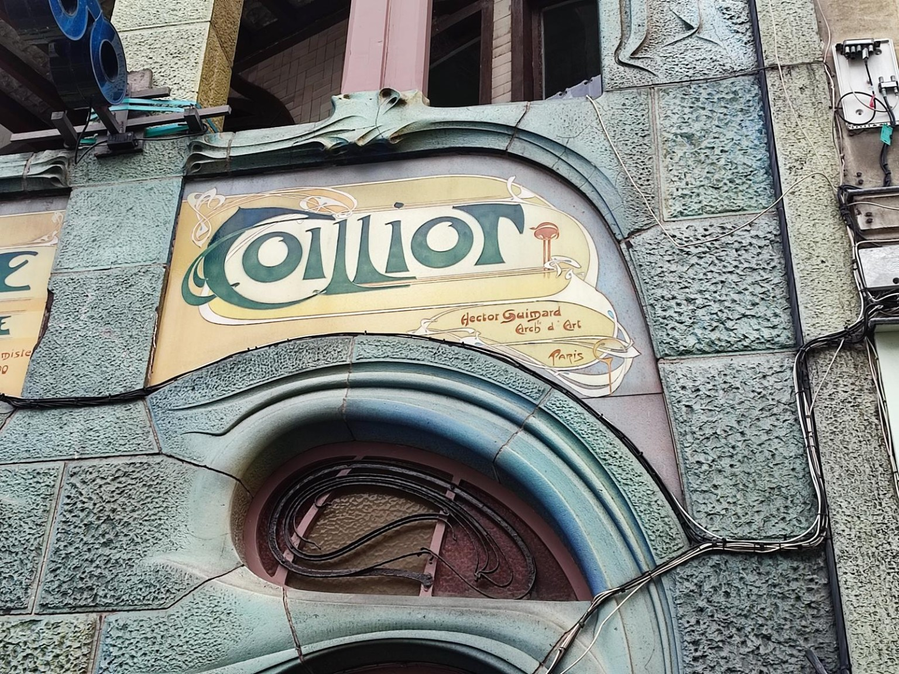
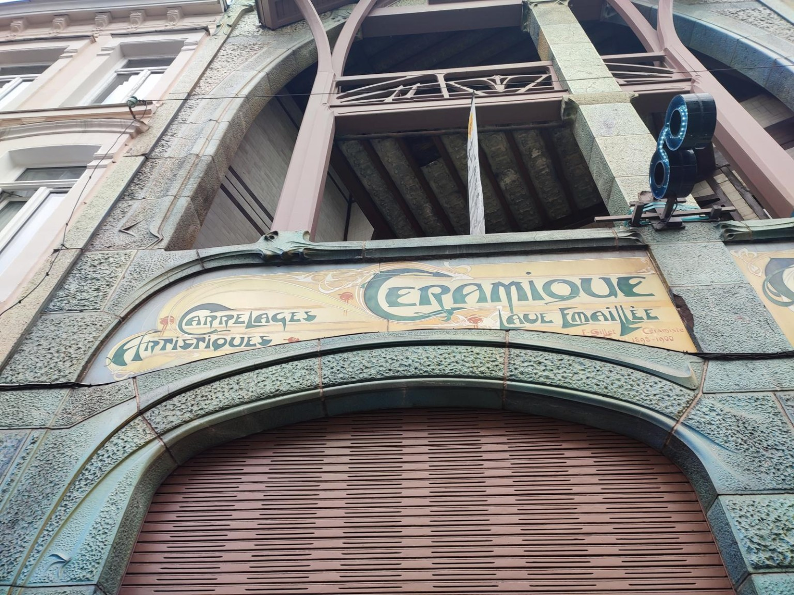

Maison Coilliot
Hector Guimard turns a narrow commercial facade into a total composition of architecture, lettering and craft.
Open the photographic dossier

No. 01 Palermo
Featured building · Palermo
An Art Nouveau residence designed by Ernesto Basile
An exterior staircase leads towards an asymmetrical facade of towers, arches and varied rooflines. In Palermo, Villino Florio brings several architectural forms together in a distinctive expression of Italian Liberty.
Dossier in preparationThe journal
A facade first. Then the materials, signs and details that give each place its character.
Hector Guimard turns a narrow commercial facade into a total composition of architecture, lettering and craft.
Open the photographic dossier

Two sculpted owls, geometric windows, ironwork and sgraffito give this Brussels facade its identity.
Open the photographic dossierErnesto Basile composes towers, arches and rooflines around a monumental exterior stair.
Dossier in preparation · Private visual review
Polychrome brickwork, stained glass and a projecting bay window shape an elaborate Art Nouveau facade.
Dossier in preparation · Private visual review
Explore the magazine